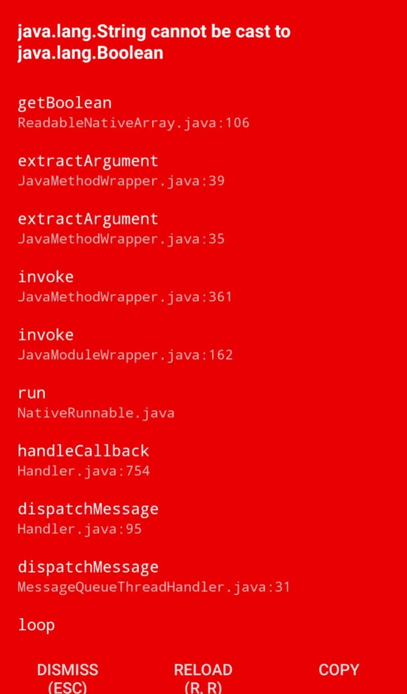
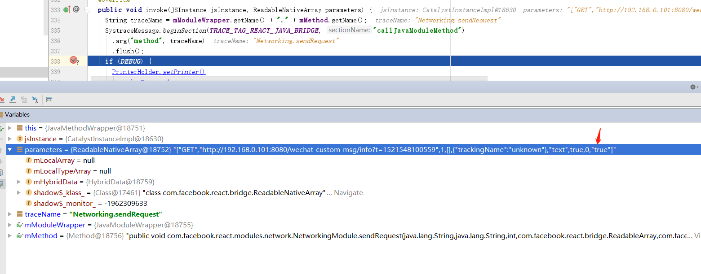
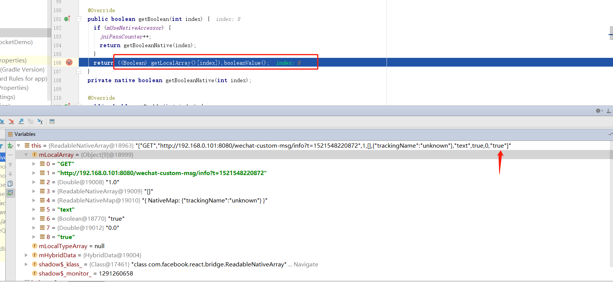

图片
'work-log-2018年9月20日'
npm使用总结
- 当你准备发布你的包到npmjs时，首先得
npm login(只需一次). - 当你执行
npm publish时,不妨先执行npm pack，看看打包出来的dist文件是否和预期一样。 - 当你因为某个错误的操作，导致把一些错误的东西发布到npmjs（比如说我)，这个时候你莫慌.只需把错误的版本设置为
deprecate,使用命令npm deprecate <pkg>[@<version>] <message>
1 | npm deprecate test@0.0.1 "此版本作废" |
nginx配置Websocket代理 + SSL
1 | http{ |
参考
https://www.cnblogs.com/penghuwan/p/6973702.html
http://nginx.org/en/docs/http/ngx_http_ssl_module.html#ssl_certificate
brainfuck
关于
维基百科
Brainfuck，是一种极小化的计算机语言，它是由Urban Müller在1993年创造的。由于fuck在英语中是脏话，这种语言有时被称为Brainf*ck或Brainf***，或被简称为BF。
实现
主要逻辑如下1
2
3
4
5
6
7
8
9
10
11
12
13
while(src not eof){
opcode = fetchCode();//从source读入单个字符
interprete(opcode);//根据opcode的语言翻译
}
//switch case....
void interprete(opcode){
switch(opcode){
case ....
....
}
}
最后java实现的brainfuck
参考
react-native中使用SockJs和StompJs
本文梳理在使用过程中遇到的坑点（Android）
开始使用
package.json1
2
3
4
5
6
7
8
9
10
11
12
13
14
15
16
17
18
19
20
21
22
23
24{
"name": "websocketDemo",
"version": "0.0.1",
"private": true,
"scripts": {
"start": "node node_modules/react-native/local-cli/cli.js start",
"test": "jest"
},
"dependencies": {
"react": "16.3.0-alpha.1",
"react-native": "0.54.2",
"sockjs-client": "1.1.4",
"stompjs": "^2.3.3"
},
"devDependencies": {
"babel-jest": "23.0.0-alpha.0",
"babel-preset-react-native": "4.0.0",
"jest": "22.4.2",
"react-test-renderer": "16.3.0-alpha.1"
},
"jest": {
"preset": "react-native"
}
}
然后在App.js中使用
1 | //引入SockJs和 Stompjs |
产生问题
然后在android设备中调试 react-native run-android
不出意外启动你的App后你会看到以下场景

根据出错信息推断，应该是js的参数映射到java方法的形参上出现了类型转换错误
接着跟着App提示的信息调试代码

从图中我们可以看出，该方法的参数列表应该使我们实例化SockJs传入的url
再观察图中的traceName 映射到ReactNative Networking模块中的sendRequet方法
查看NetworkingModule(该模块实现了js中的XMLHttpRequest接口)源码发现，最后一个参数的类型为boolean1
2
3
4
5
6
7
8
9
10
11
12
13
14
/**
* @param timeout value of 0 results in no timeout
*/
public void sendRequest(
String method,
String url,
final int requestId,
ReadableArray headers,
ReadableMap data,
final String responseType,
final boolean useIncrementalUpdates,
int timeout,
boolean withCredentials)
然而我们实际参数为["GET","http://192.168.0.101:8080/wechat-custom-msg/info?t=1521610071602",1,[],{"trackingName":"unknown"},"text",true,0,"true"]
很明显最后一个参数是一个字符串,所以导致了解析参数时

出现的
java.lang.String cannot be cast to java.lang.Boolean
可以推断是SockJs发起了XHR请求导致App出现了这个问题
最后找到SockJs中的abstract-xhr.js源码
1 | if ((!opts || !opts.noCredentials) && AbstractXHRObject.supportsCORS) { |
很明显问题就出在这儿。
查看mozilla官网中对XMLHttpRequest的API描述
The XMLHttpRequest.withCredentials property is a Boolean that indicates whether or not cross-site Access-Control requests should be made using credentials such as cookies, authorization headers or TLS client certificates. Setting withCredentials has no effect on same-site requests.
如何解决
1 | this.xhr.withCredentials = true; |
- 将
"true"改为Boolean类型的true - 或者到
你的项目路径/node_modules/sockjs-client目录中使用gulp重新编译
找到sockjs
React-native 采坑记
调试时出现错误，找不到index.js.bundle
react-native run-android 当你输入这个命令调试App时候，出现找不到index.js.bundle 文件.
如何解决呢？打开你的App，Menu->Dev Settings->Debugging->Debug Server host & port for devices
然后输入你的服务ip和端口，端口通常是8081。
然后返回到App主界面，Menu->Reload .这时候App应该能正常显示了
android studio 下不执行 gradle中的bundleReleaseJsAndAssets任务
导致打包出来的apk启动后出现错误。这是因为没有生成index.js.bundle文件到asset目录
如何解决:https://github.com/facebook/react-native/issues/7258
暂时就这些了，后续补充
Jsoup简易教程

本文是关于Jsoup的简单教程
目录：
Jsoup 简述
关于Jsoup：
jsoup是一个用于处理HTML的Java库。它提供了一种非常方便的API，用于提取和操作数据，使用DOM、CSS和类jquery方法。
- 从URL、文件或字符串中提取和解析HTML
- 使用DOM遍历或CSS选择器查找和提取数据
- 操作HTML元素、属性和文本
- 清除用户提交的非安全代码内容，以防止XSS攻击
- 输出整洁的HTML

获取获取糗事百科最新的段子1
2
3
4
5Document doc = Jsoup.connect("https://www.qiushibaike.com/text/").get();
Elements contentList = doc.select("div#content-left.col1 a.contentHerf");//content area selector
contentList.forEach(content->{
System.out.println(content.attr("href")+":"+content.text());//parse href attribute and content
});
OpenSource
jsoup是一个开放源码项目，在MIT的协议许可下发布。源代码托管在GitHub上
选择器语法
使用选择器语法查找元素
jsoup支持类似于CSS(或JQuery)的选择器方式
选择器概览
tagname: 通过标签名称查找元素，e.g.a、div、p、span等标签…ns|tag: 通过命名空间标签查找元素 e.g.fb|name查找<fb:name>元素#id: 通过id查找元素, e.g.#logo.class:通过类名查找元素, e.g..masthead[attribute]: 属性选择器, e.g.[href]查找属性名为href的元素[^attr]: 查找已该属性开头的元素, e.g.[^data-]查找HTML5dataset属性[attr=value]: 元素有该属性和值, e.g.[width=500](或者带分号[data-name='launch sequence'])[attr^=value], [attr$=value], [attr*=value]: 以元素的属性 开头、结尾、或者属性包含某值e, e.g.[href*=/path/][attr~=regex]: 属性中包含正则表达式; e.g.img[src~=(?i)\.(png|jpe?g)]获取所有的img标签，并且图片地址包含(png,jpeg)*: all elements, e.g. *
选择器组合
el#id: 某元素有该ID, e.g.div#logoel.class: 某元素有该类, e.g.div.mastheadel[attr]: 某元素有该属性, e.g.a[href]
如何使用

1
2
3
4
5
6
7
8
9
10
11
12
13//获取开发者头条当日文章
SimpleDateFormat sdf = new SimpleDateFormat("yyyy-MM-dd");
String url = "https://toutiao.io/prev/"+sdf.format(new Date());
System.out.println("fetch url:"+url);
Document doc = Jsoup.connect(url).get();
Elements list = doc.select("div.daily div.post");
System.out.println("点赞\t\t标题\t\t\t\t\t\t\t\t作者");
list.forEach(post->{
String upVote = post.select("a.btn.btn-default.like-button").text();
String title = post.select("h3.title").text();
String author = post.select("div.subject-name").text();
System.out.println(String.format("%-4s%-60s%s",upVote,title,author));
});
4.开始搞事吧

参考资料
Compile openssl on win10
本次编译环境
- os version:windows 10 professional x64
- JDK1.8
- Perl 5.24.2
- Visual Studio 2017
- NASM 2.12.0.2
配置环境
下载perl
到ActiveState.com下载perl并安装
如果一切顺利的话1
2
3
4C:\Perl64\eg>cd C:\Perl64\eg
C:\Perl64\eg>perl example.pl
Hello from ActivePerl!
C:\Perl64\eg>
下载openssl
下载openssl
解压至：1
C:\openssl-1.0.2m
下载NASM
下载[NASM]，安装后，需要配置path环境变量
编译openssl
- 打开vs Command Prompt
1 |
|
最终编译完成后会输出至d:\openssl_lib
参考文章
APICloud插件--ChromeInspect
chromeInspect
让chrome调试你的apicloud应用
源码地址
使用方法
1.在apicloud后端打开模块管理，上传模块，然后添加至你当前项目里
2.js中使用
1
2
3
4
5
6
7
8
9
10
11
12apiready = function(){
var ci = api.require("chromeInspect");
//开启调试
ci.enableDebug(function(ret,err){
console.log(ret);
});
//输出
//关闭调试
ci.disableDebug(function(ret,err){
console.log(ret);
})
}
系统要求
- android 4.4+
- chrome 最新版